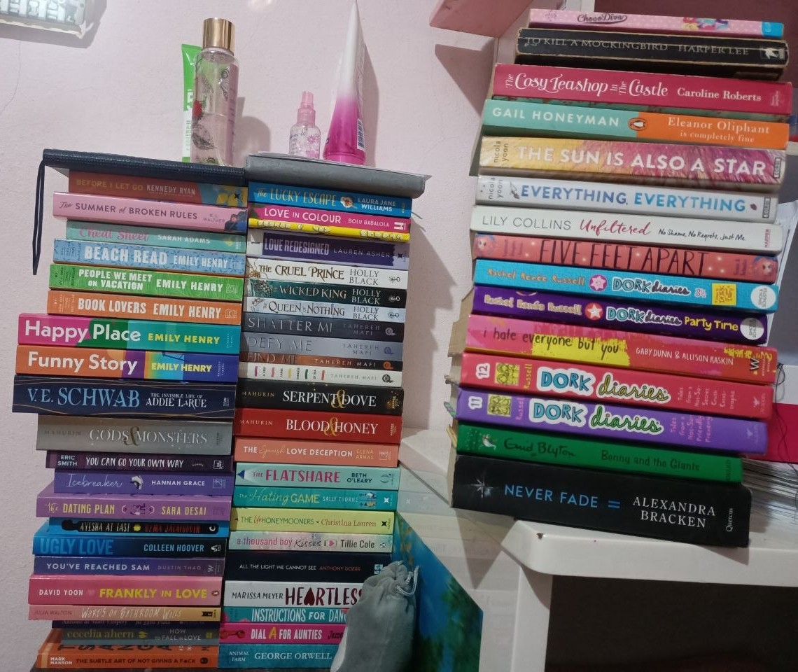
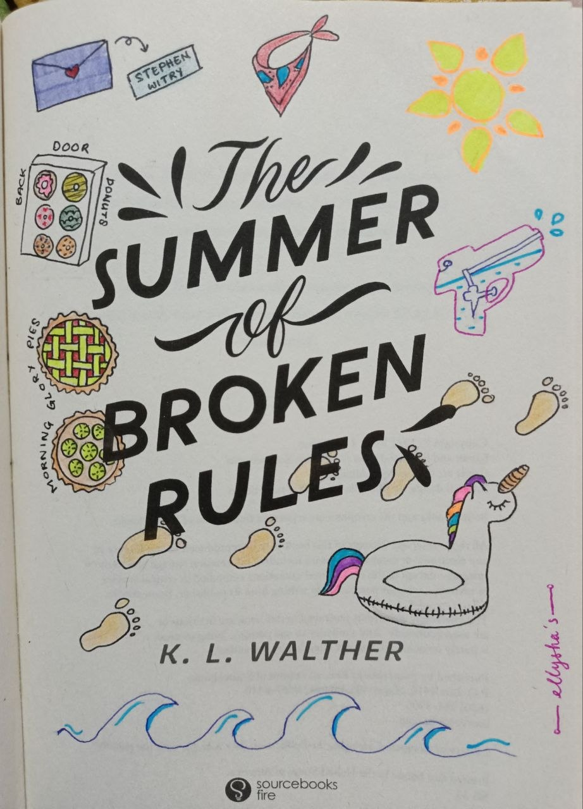

Beach Read
- Emily Henry

The Invisible Life of Addie LaRue
- V. E. Schwab
Veil, volume 6: Untangled Rouge
- Kotteri
They're also my first love
- Emily Henry
- V. E. Schwab
- Kotteri

I read a variety of books from different genres. Up to this point, I have read 512 books, from multiple genres, such as Fantasy, Romantasy, Romance, Young Adult (YA), Thriller, and Non-fiction. However I do not own that much because books are expensive so most were read online.

My favourite author is Emily Henry. I own almost every book she has published. I discovered her during the COVID-19 lockdown when I was bored out of my mind at home. I used the free time I had to read books from day to night until the sun was up and I didn't realised I stayed up reading. It's also how I ended up wearing glasses :) I have short-sightedness because I used to get scolded for reading way too late into the night so I read in the dark accompanied by a flashlight.

I also like to draw inside the book titles and annotate my books. I don't use tabs or sticky notes like some of my friends do because it would irritate me if the tabs weren't centered. So I opted for pens and pencils and I underline quotes that stick out to me and I use a pencil to jot down my thoughts while reading.

I have yet found a comfortable reading position that does not affect my posture. God forbid I slouch in my 20s. But reading in bed while leaning agaisnt the headboard, with my blanket wrapped around me, and the AC blasting cool air, is undoutably the coziest position yet.